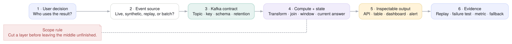
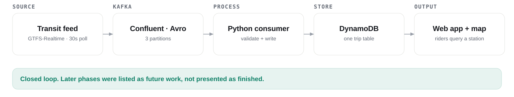
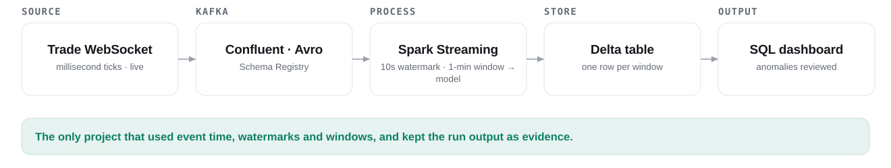
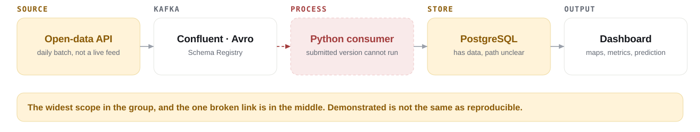
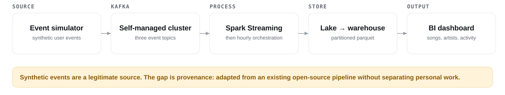
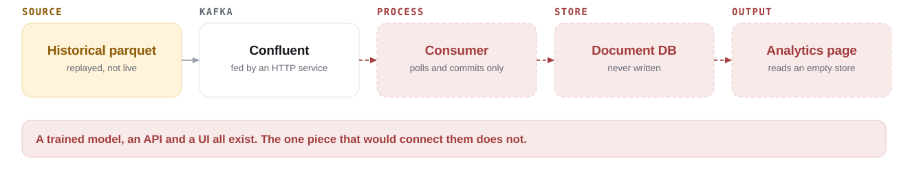
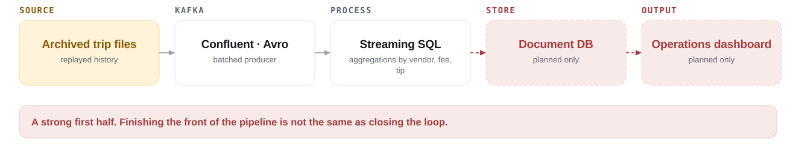
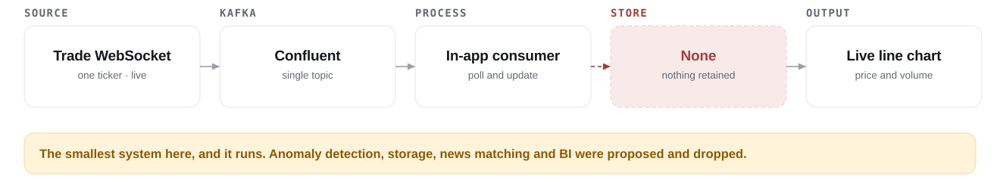

White
Delivered and runnable from the submitted code.
MSDS 682 · Lecture 8 · Part 1
See what seven 2023 teams actually built and where each one stopped, then apply the same architecture contract to your own proposal.
What the 2023 teams actually built
| Project | Problem it solved | Source | Where it ended |
|---|---|---|---|
| 1 · Transit arrival service | Next train and current delay without the operator's own app | Live feed | Closed loop |
| 2 · Market anomaly detection | Which one-minute trading windows looked abnormal | Live feed | Closed loop |
| 3 · Civic request analytics | Where city service requests cluster and how long they take | Daily batch | Consumer only in the demo |
| 4 · Listening behaviour analytics | Listening and page-view analytics at a controlled volume | Synthetic | Pipeline largely reused |
| 5 · Transaction anomaly system | Suspicious transactions separated, stored, and monitored | Replay | Consumer left a stub |
| 6 · Taxi operations analytics | A live operations view of trips, tips, and vendors | Replay | Store and dashboard missing |
| 7 · Live price chart | One ticker's price and volume while the market is open | Live feed | Ran, nothing retained |
Proposal scope gate

How to read the next seven pages

Delivered and runnable from the submitted code.
Partly delivered, or the description does not match what the source really is.
Planned in the report, not implemented.
Project 1 of 7 · live source · closed loop
Problem. A rider wants the next train and the current delay without opening the transit operator's own app.
Project 2 of 7 · live source · real stateful processing
Problem. A trader wants to know which one-minute windows had abnormal volume and price while the market is open.

Project 3 of 7 · scheduled batch · broadest scope
Problem. A city wants to see where service requests cluster and how long a new request will take to close.

Project 4 of 7 · synthetic source · largest surface
Problem. A music service wants listening, login, and page-view analytics at a volume the team can control.

Project 5 of 7 · replayed history · modules without the bridge
Problem. A payments team wants suspicious transactions separated from normal ones, stored, and monitored.

Project 6 of 7 · replayed history · strong first half
Problem. An operations team wants a live view of trips, passenger counts, tips, vendors, and airport activity.

Project 7 of 7 · live source · smallest system
Problem. A trader wants one ticker's price and volume updating live while the market is open.

Not every source was truly live
| Pattern | Seen in | What to say in your proposal |
|---|---|---|
| Live external events | Projects 1, 2, 7 | A real-time source, with the polling interval or websocket boundary stated |
| Synthetic event stream | Project 4 | Simulated events, generated to exercise a streaming system |
| Historical replay | Projects 5, 6 | Archived data replayed as events, which is not a live source |
| Scheduled batch through Kafka | Project 3 | Batch ingestion plus Kafka transport, not continuous generation |
Review every proposal the same way
Part 1 takeaway